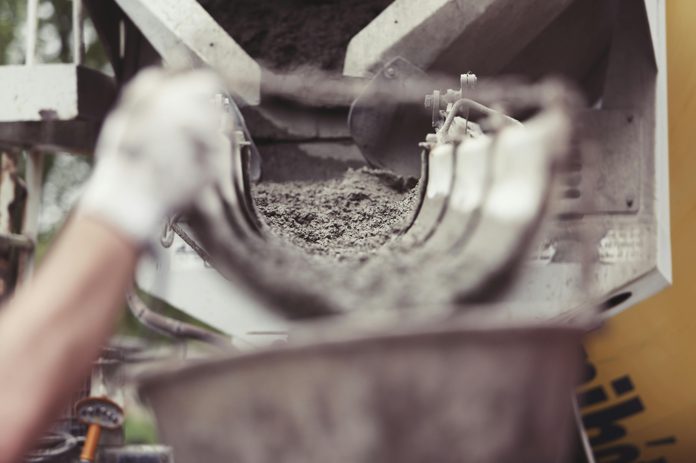

Kami Melayani
PT. Kayla Mas Astari menghadirkan solusi konstruksi lengkap sesuai dengan keinginan dan kebutuhan Anda.

konstruksi beton
Dari Fondasi hingga Struktur,Kami Ahlinya
pembangunan infrastruktur
Kami Hadir untuk Mewujudkan Pembangunan Nyata.

Desain Arsitektur
Desain Cerdas, Arsitektur Berkualitas.